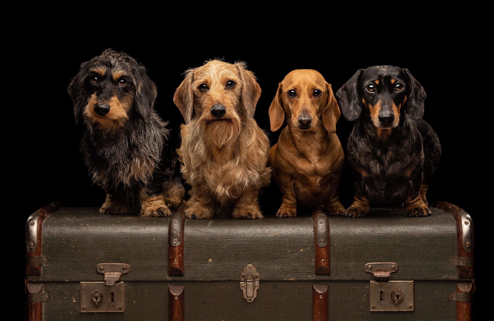

Looking for a way to immortalize the love and joy your pet brings to your life? At Pet Photography Studio, we specialize in creating stunning pet portraits that capture your furry friend's unique personality. We offer a variety of session options, from playful outdoor adventures to cozy studio portraits, ensuring we find the perfect setting to showcase your pet's spirit.
Our team of experienced and passionate photographers are experts at putting even the most energetic pets at ease. We understand the special bond between you and your animal, and we're dedicated to creating cherished memories that will last a lifetime. Browse our gallery to see the magic we create, and contact us today to schedule your pet's portrait session!
Dog Breed Types 